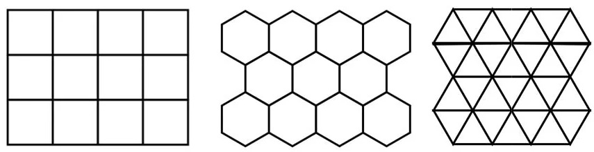
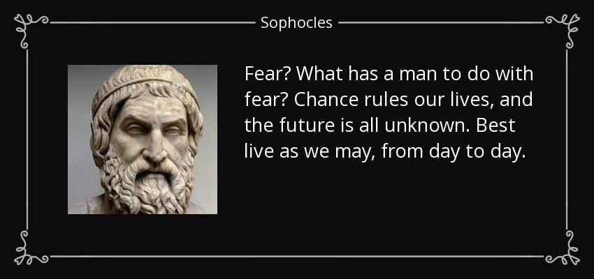

Reading History Forwards
Here I just want to provide a little cautionary aspect on any attempt to recount history. It's important that we shed our present knowledge and immerse ourselves in the uncertainties of the past.
In the context of gaming, when a game is conceived, its creators are navigating uncharted territory, unaware of the impact their creation might have on the gaming landscape. This perspective of an uncertain future prompts us to appreciate the risks taken by pioneers in game development, who, armed with creativity and ambition, ventured into the unknown.
Telling the Story
Scholars and historians have been drilling test wells in what they thought was the bedrock of gaming history for quite some time now. This is often done via the process of "telling the story" of that history.
When you consider story-telling, you become aware that whether we're writing them, telling them, living them, or using them as a pedagogical way to see and understand the world, a story always has a moment when the plot thickens. In other words, something significant happens. Looking at those moments is crucial.
But what counts as "significant"? Clearly we can frame parts of a story as significant just based on how we emphasize those parts. We can highlight moments that drive the narrative forward, reveal essential information, or impact the people involved in a meaningful way.
This notion of "significant moments" is similar to recognizing the pivotal points in other areas of study, whether it's a turning point in physics, a groundbreaking discovery in archaeology, or a key event in history. Each of these moments holds importance and alters the trajectory of the overarching narrative.
However, a challenge here is that the significance is something we recognize in hindsight. From the future we have a privileged position of knowing how things turned out and this necessarily provides us with a certain parallax in terms of significant moments.
A Cautionary Note
So this brings us to our first cautionary bit.
The act of "telling the story" of history, while essential, carries the inherent risk of distorting our perception of significant events. The narrative process, shaped by emphasis, framing, and hindsight, may inadvertently alter the weight and meaning of certain historical moments.
This distortion arises from the storyteller's subjective choices, potentially obscuring the true complexity and nuances of pivotal events in the unfolding tapestry of history. So we need to use this as a reminder that historical narratives, though invaluable, should be approached with a critical awareness of the storyteller's influence on the portrayal of significance.
Dan Roam in his book Show and Tell has some interesting visuals that I think resonate quite well with this idea, even though his book is focused specifically on presentations. There are four primary modes that resonate with me in terms of how we present history by "telling its story." The first two of these are the report and the explanation.

The idea here is that a pure reporting mode provides basic information. Essentially this is where you deliver the verifiable facts. The explanation, however, is meant to change the audience's broader knowledge. The second two of the modes are called the pitch and the drama.

Here the analogy stretches a little bit but the idea of "the pitch" for me is where you shift from facts and explanation and start to guide the audience towards your particular interpretation of the history you're recounting. Here's where you engage your the mind of your audience. The drama part is where you engage their heart.
What I'll call the "distortion of significance" can come in when we focus on the drama part to the exclusion of the others, which is usually done in the interests of telling what we believe to be the most interesting story. My viewpoint is that what we need are the interplay of all three elements: reporting (to get the basic facts), explanation (to put the facts in context), the pitch (to present our own viewpoint) and the drama (to contextualize our viewpoint in relation to the contextual facts).
Starting with reporting ensures a foundation of factual accuracy, providing the essential bedrock of historical information. Explanation adds depth by placing these facts into a broader context, fostering a richer understanding of the circumstances surrounding key moments. The pitch introduces a subjective viewpoint, offering a personalized interpretation of events. Finally, the drama injects emotion and context, helping to illuminate the significance of the viewpoint within the broader historical landscape.
The Background Books of History
Let's consider the 1998 book Serendipities: Language and Lunacy by Umberto Eco.

Eco recounts how the thirteenth-century Italian explorer Marco Polo searched for unicorns with a certain tenacity and, not only that, claimed to have found them. A claim to have found unicorns would definitely seem to be a significant event in this historical context.
The wider context here is that as Polo was exploring the islands of Sumatra, he specifically mentioned "numerous unicorns" that were "very nearly as big" as "wild elephants." Polo seems to have been a little surprised at the nature of these creatures. In Book 3 of his Travels, Polo said:
Tis a passing ugly beast to look upon, and is not in the least like that which our stories tell of as being caught in the lap of a virgin. ... In fact, tis altogether different from what we fancied.
Polo elaborated on this in telling us some specific characteristics.
[The animal had] hair like that of a buffalo, feet like those of an elephant, and a horn in the middle of the forehead, which is black and very thick. ... The head resembles that of a wild boar, and they carry it ever bent towards the ground. They delight much to abide in mire and mud.
Going with the above idea of modes of storytelling, what you just got was the report.
Crucial context here is that during Marco Polo's time, the existence of unicorns was widely accepted in European culture — but they most certainly were not described in anything like Polo's description. And with the mode of storytelling, what I just gave you was a bit of the explanation.
So we know, from Polo's own writing, that he perceived the mismatch between expectation and reality. And ssuming we're going with the idea that Marco Polo didn't actually discover unicorns, what did he discover?
One possibility that historians latch onto is that Polo was referring to rhinoceroses, which were known to inhabit the regions he visited. The Javan rhinoceros, in particular, has a single horn.

So there's the pitch: an attempt to allow you to accept a possible interpretation of events. But let's play that interpretation out a bit.
It probably helps to keep in mind rhinoceroses were known to both European and Asian cultures at the time. The animal had been described by Greek and Roman writers and was depicted on ancient coins. In medieval Europe, rhinoceroses were sometimes depicted in artwork and reports of their existence were commonly circulated by travelers and merchants.
I bring all that up because it leads to the question: how could Marco Polo possibly have confused this animal for a unicorn?
Well, one thing is apparent: Marco Polo, apparently, had never heard of rhinoceroses. But unicorns were something he had heard of. Therefore, an animal that moved about on four legs with a horn on its nose had to be a unicorn, even if it clearly didn't match any sort of description he had ever heard.
How do we account for all this? Well, here's where we get a bit into the "drama" part, where the goal is to win your heart and your mind.
Accrording to Eco, Marco Polo fell victim to what Eco refers to as "background books." In the chapter "From Marco Polo to Leibnitz", Eco provides a context for these "books" which are conceptual in nature and refer to our presuppositions about the world. Of background books, Eco says:
We travel and expore the world, carrying with us some 'background books.' These need not accompany us physically; the point is that we travel with preconceived notions of the world, derived from our cultural tradition. In a very curious sense we travel knowing in advance what we are on the verge of discovering, because past reading has told us what we are supposed to discover.
Thus, in the case of Marco Polo, these "background books" certainly included the widely held belief in unicorns during his time and the stories and legends he may have heard about them. Those stories, and his apparent confirmation of them, would have amounted to a "significant event" in his context. Eco continues:
The influence of these background books is such that, irrespective of what travelers discover and see, they will interpret and explain everthing in terms of these books.
By relying on these "background books," and attaching significant events to them, Polo's understanding of reality was shaped by culture, language, and history. Polo had, it would seem, no interpretive space for a rhinoceros. So he consulted what he knew — his background books — and found something he could relate to. As Eco says:
Because an entire tradition had prepared him to see unicorns, he identified these animals as unicorns ... We cannot say Marco Polo lied. He told the truth, namely that unicorns were not the gentle beasts people believed them to be.
Of course, while saying all this in the context of this example, we do have to allow that background books are not necessarily wrong. Our presuppositions can be useful and even accurate. But they can also lead to mistaken beliefs, such as about some single-horned creature being a unicorn. Again, as Eco relates:
But he was unable to say he had found new and uncommon animals; instinctively, he tried to identify them with a known image ... He was unable to speak about the unknown but could only refer to what he already knew and expected to meet.
That idea of a state of mind of "knowing" is crucial here. By that I mean it was known that unicorns were purported to be four-legged creatures with a single horn (background book). It was known that certain four-legged single-horned creatures had been observed (significant events) and that Polo himself now observed them (significant event).
What was lacking was an ability to embrace the unknown and to step into a state of unknowing. Polo's case, as related by Eco, is just an example of a wider human prediliction. And it's one that can be quite harmful when studying history.
Before I look at that particular prediliction, please note how with the above idea of "background books" I took you along that spectrum of modes of storytelling, from pure reportage to a bit of the "drama" regarding how all this played out.
The Need for Unknowing
Relevant to all that, there's a saying that goes: "We see things not as they are, but as we are." This quote is attributed to Anais Nin, a French writer and essayist. It turns out, at least psychologically speaking, there's an argument to be made that seeing is not believing so much as believing is seeing.
In fact, there's a fascinating book with that exact title: Believing is Seeing. The book is subtitled "A Phycicist Explains How Science Shattered His Atheism and Revealed the Necessity of Faith." In this book, author Michael Guillen writes:
If I stuck with my hard-nosed, scientific worldview — if I insisted that 'seeing is believing' — then I'd be turning a blind eye to 95 percent of what's out there in the universe. It needed some expanding. It had to become big enough to include belief not only in what I could see and prove but in what I could not see or prove.
Another book of interest here is similarly titled Believing is Seeing but with the subtitle of "Observations on the Mysteries of Photography." In that latter book, author Errol Morris writes:
We do not form our beliefs on the basis of what we see; rather, what we see is often determined by our beliefs.
I bring these books up because the idea of "believing is seeing" can lead to a whole lot of traps in thinking. Think about what we're saying here: what we see is based on what we believe and we may have belief in what we can't see or prove. Now add in that notion of "background books" and you have a very interesting way to see how humans can frame their thining.
Let's consider this specifically in the context of history. We can't really see history directly. It's the past. It already happened. Even if we lived through it, we can only "see" our recollections in the form of our memories or via the memories of others. This means our ability to prove certain things is highly suspect.
Now let's say we have a "background book" or source — such as on the Nazi Holocaust or the John F. Kennedy assassination. And this source is written with a particular bias based on pre-existing beliefs. Well, that might contribute to the revision of historical events, portraying them in a way that aligns with our beliefs rather than an accurate representation of the past.
This allows us to frame many "significant events" in history with hardly any way to categorically prove or disprove the basis for them except in the most banal and trivial sense. Likewise, believing in certain extraordinary events or phenomena — like seeing a unicorn — may lead individuals to see significance where there may be none. This can contribute to the perpetuation of myths or inaccuracies.
What helps us avoid the many traps is to welcome the state of unknowing. This state is where you learn to enjoy the questions more than you do the answers. This also allows you to recognize when certain things may simply be unknowable.
For Marco Polo, this might have exhibited itself along the lines of recognizing that whatever it was he ws looking at, it didn't seem to match any conception of a unicorn that he had ever heard of. So perhaps he could have just accepted that whatever was being observed was an unknown creature for now.
Crucially it's necessary to be okay with things being unknowable. In a historical research context, this is critically important. Being okay with that helps us avoid trying to retro-plaster over the cracks in history with a false narrative or a contrived story. That story or narrative may be plausible — it may even be exactly what happened — but we don't know if it's actually true.
A book I highly recommend is The Unknowable in Early Modern Thought: Natural Philosophy and the Poetics of the Ineffable by Kevin Killeen.
What we're back to is storytelling here and the idea of narrative.
The Illusions of Narrative
One way to get to that state of unknowning is to avoid letting a story or a narrative put you into a state of knowing. That sounds pretty obvious but also might sound a little odd. After all, is being in a state of knowing in and of itself bad?
The answer, of course, is no. But in historical matters it can be very difficult to separate a state of knowing from a state of false-knowing. In How History Gets Things Wrong, author Alex Rosenberg says:
The same science that reveals why we view the world through the lens of narrative also shows that the lens not only distorts what we see but is the source of illusions we can neither shake nor even correct for most of the time.
Rosenberg is specifically warning against narrative history here, of which he says:
Narrative history is almost always wrong in a way that science has managed to escape. It's wrong even when a narrative gets the facts of what happened exactly right, without adding things that didn't happen, or leaving out crucial things that did.
It's very important that we avoid looking back and molding events to fit an already established belief, which a narrative often encourages. It helps to think of each element in the history we study as a tile. We can think of these elements as little tessera dropped into place — one by one — until a design of history comes into view.
Thus do we get a tessellation that, instead of being a one-sided, overly simplistic view of history, is a view that shows complexity of a particular time period, culture, or event as it unfolded.
The Tessellation of History
The design reflected in this tessellation may reinforce what we've already believed but it equally may challenge what we thought we knew.
Both outcomes are just fine; it really depends on the credibility of the interrogable evidence we're able to use.
What we end up with resembles not a predestined master story but more a set of mosaic tiles in the process of being pieced together.
As it will usually turn out, many pieces are still missing, and at times, some pieces pop into unexpected places. More accurately, these vibrant, many-shaped tiles work to create not one story, but many.
The picture we get ends up more like the view inside a kaleidoscope, the tiles shifting and the picture changing with each turn of the cylinder.
Our evidence is always in fragments. And, as it turns out, we can often work to make these fragments only meaningful, rather than completely whole. Thus we may have locally coherent stories but not one, overarching grand narrative.
The Problem of Seeing
Consider the following sentiment by Sophocles in his play Ajax, written aroudn 440 BCE:
I know of many things which mortal men can see and learn from. But until he meets it, no one sees what is to come of his own fate.
These are lines 1418 to 1420 in the Greek text. This is also sometimes expressed in translation like this:
Men may learn many things from what they see. But no man can see what the Fates have in store for his future.
This sentiment resonates with a broader theme found in Sophocles' works and ancient Greek philosophy in general. The Greeks emphasized the importance of empirical knowledge and the idea that direct experience and observation were crucial for gaining wisdom and understanding.
Sophocles' plays often explored broad ideas like the limitations of human knowledge, the role of fate, and the consequences of actions. Thus the above quote could be seen as reflecting the playwright's recognition of the limitations of foresight and the unpredictable nature of the future which is a pretty crucial thing for anyone studying history to come to terms with.
The future is not inevitable; it's often random. At the very least, it's often a matter of a series of accidents, some of which are quite fortuitous in hindsight.
This sentiment may be distressing to some and yet it's important. History allows us to look back from the perspective of the present and find certain meanings regarding past events. But that "meaning" is often patched together from a series of other events that did happen but certainly did not have to happen.